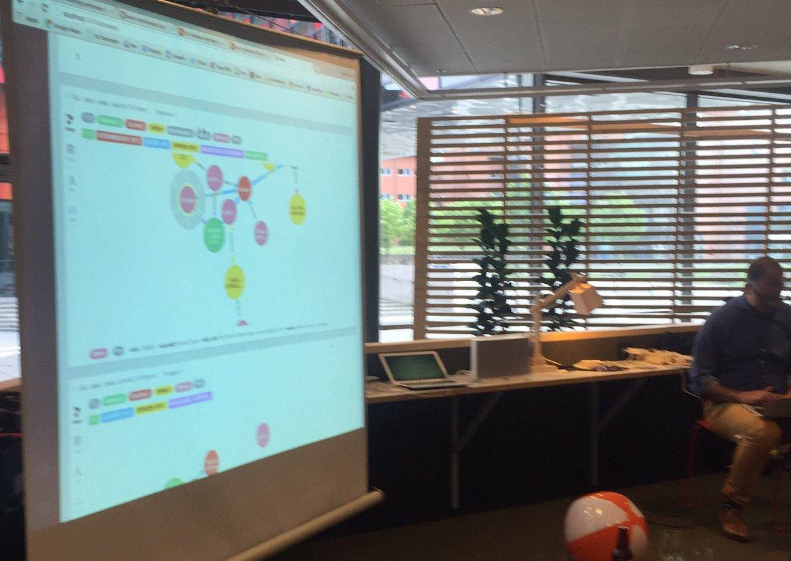

May 2016
Thank you @neo4j for sharing on youtube so I can listen while walking #Neo4j #PanamaPapers youtu.be/tAlu3ud2k_A
The hashtag to follow the coming week #eswc2016 for interesting things about #semanticweb #linkeddata twitter.com/eswc_conf/stat…
Example of an Endpoint: Percent change from baseline in HgbA1C measured at 12 weeks aolivamd.blogspot.se/2016/05/defini… @nomini
I just realized both @neo4j and @ontotext did run webinars earlier today about #panamapapers as #LinkedData and #neo4j property graph
On my reading list 3(3): Principles of Health Interoperability: SNOMED CT, HL7 and FHIR amazon.com/dp/3319303686/
On my reading list 2(3): Metadata (The MIT Press Essential Knowledge series) by Jeffrey Pomerantz amazon.com/dp/0262528517
On my reading list 1(3): The Business Blockchain: Promise, Practice, and Application of the Next Internet Technology amazon.com/dp/1119300312/
Lots of interesting stuff from @PHUSETwitta UK SDE last week phuse.eu/Cambridge2016.… Thanks for sharing the presentations
How blockchain-timestamped protocols could improve the trustworthiness.... Irving G and Holden J, @F1000Research, f1000research.com/articles/5-222…
Exploring @neo4j database with #panamapapers in a meetup Gothenburg. Nice presentation by @rvanbruggen

Nice first presentation at @neo4j meetup Gothenburg when @rvanbruggen load #neo4j database with #panamapapers data neo4j.com/blog/icij-neo4…
This week I'll follow #bigdatamed Big Data in Biomedicine Conference (Enabling Precision Health) @StanfordMed
Jag gillade också denna underbara grafik och gjorde en mera mekanistisk tolkning kerfors.blogspot.se/2016/05/awesom… twitter.com/mingligt/statu…
Re-reading Identifier Design Patterns @CamSemantics in the context of URIs for clinical trial data cambridgesemantics.com/semantic-unive…
"the interesting part comes in converting these def:s into OWL, to enable computers to reason across the data" twitter.com/nomini/status/…
Some ideas about "Semantic blockchains in the Clinical Data Supply Chain" triggered by @cbrewster's excellent slides kerfors.blogspot.se/2016/05/global…
@cdsouthan @EricTopol Not w/@bengoldacre's #Alltrials & @opentrials - result level, but @YODAProject & clinicalstudydatarequest.com - pat. level
2 upcoming meetups in Gothenburg on interesting topics: #neo4j 25 May meetup.com/Graph-Database… and #blockchain 7 Jun meetup.com/Ethereum-Gothe…
Want a Document URI resolver service using @EMCdocumentum DocID (not ObjectID) #LinkedData - this looks interesting msroth.wordpress.com/2014/02/21/doc…
New blog post: Awesome graphic as Graphs. Kudos to @hughcards @smrvl and HT to @futuramb @jhagel kerfors.blogspot.se/2016/05/awesom…
Short blog post with an idea I may hope for some help of from my #LinkedData / #SemanticWeb and @neo4j friends kerfors.blogspot.se/2016/05/awesom…
data->info->knowledge by @hughcards, now with ->insight->wisdom by @smrvl makes in awesome, via @futuramb @jhagel twitter.com/jhagel/status/…
Long blog post to read from Jozef Aerts #xml4pharma CDISC end-to-end: Electronic Health Record Data in SDTM cdisc-end-to-end.blogspot.se/2016/05/electr…
Clinical Trial Data Identifiers - URIs and #Blockchains kerfors.blogspot.se/2016/05/global… Thanks Dave (@Assero_UK) for your comment on my blog
Very happy to have Harold Solbrig, Mayo Clinic, and Eric P, W3C, to speak about #FHIR, #RDF and #ShEX to our internal #LinkedData community
#FHIR STU3 is planned to include: Introduction of RDF, tied to an ontological base twitter.com/grahamegrieve/…
New blog post: Global, persistent and resolvable identifiers for clinical data kerfors.blogspot.se/2016/05/global… HT @nomini @Assero_UK @pinnacle_21
"Ideally, the identifier is globally unique. This brings us closer to creating a web of clinical data." aolivamd.blogspot.se/2016/05/improv… HT @nomini
@Assero_UK @plample_ @nomini @NovasTaylor .. SDTM domains. For storage: maybe Computer-Based Patient Record Ontology code.google.com/archive/p/cpr-…
No 1: "SDTM should incorporate unique identifiers for each record in each domain." <- Yes! twitter.com/nomini/status/…
Reading a long, nice post by Dave I-H after #cdiscEurope about the need for a #CDISC20 w/ shout-out to #CDISC2RDF twitter.com/assero_uk/stat…
Just found: Linking Open Data for Rare Diseases (LORD) using @Orphanet Rare Disease Ontology enlord.bndmr.fr #LInkedData
@NovasTaylor Yes would be great if CT.gov do as @openFDA Would be even better with URIs, see github.com/FDA/openfda/is…
Could be much better if: 2/2 "Things not strings" kerfors.blogspot.se/2015/02/clinic… twitter.com/everyclinicalt…
Could be much better if: 1/2 Result data and metadata as #LinkedData see phusewiki.org/wiki/index.php… cc: @NovasTaylor twitter.com/everyclinicalt…
Sharing @wilbanks' excellent article with colleagues: First, design for data sharing #datasharing nature.com/nbt/journal/va…
Two events this week, a bit off topic for me, but I will even so try to follow them remotely #ICHOM2016 @ICHOM_ORG | #ATS2016 @atscommunity
Well, just because we place the data "in the cloud" does not mean it is #LinkedData 5stardata.info/en/ twitter.com/kevin2kelly/st…
Bookmarked: "A data-driven concept schema for defining clinical research data needs" on CiteUlike ift.tt/27mytLQ
Interesting about challenges with @wikidata #linkeddata out of context organized using #semanticweb HT @ABLVienna twitter.com/oxfordsmartcit…
Bookmarked: "Avoiding Data Dumpsters — Toward Equitable and Useful Data Sharing" on CiteUlike ift.tt/21ZeTBt
Interesting, pragmatic overview. I like both #RDF triple store and #Neo4j graph DB. IMHO #LinkedData URIs important twitter.com/neo4j/status/7…
Neo4j for @emblebi's Ontlogy Lockup Service. Like the way it combines #LinkedData URIs and #Neo4j HT @simonjupp github.com/EBISPOT/OLS/bl…
In the bottom of the page, click on [+ April]. Missing slides from Beverly Buckta, Pfizer, on using FHIR for mHealth twitter.com/hl7/status/727…
Jozef Aerts' slides for his #CDISCEurope talk: A visionary View on the Future of CDISC Standards xml4pharma.com/slides/Present…
Updated blog post kerfors.blogspot.se/2016/05/twitte… with link to @WayneKubick's blog post from @HL7's “Partners in Interoperability” workshop
New Blog post: Twitter Feeds and Blog posts from Conferences kerfors.blogspot.se/2016/05/twitte… inspired by the great #csvconf feed earlier this week
Traffic to my 2013, Febr Blogpost on #CDISC2RDF kerfors.blogspot.se/2013/02/cdisc2… Posted a comment linking to CDISC 2015, July cdisc.org/rdf